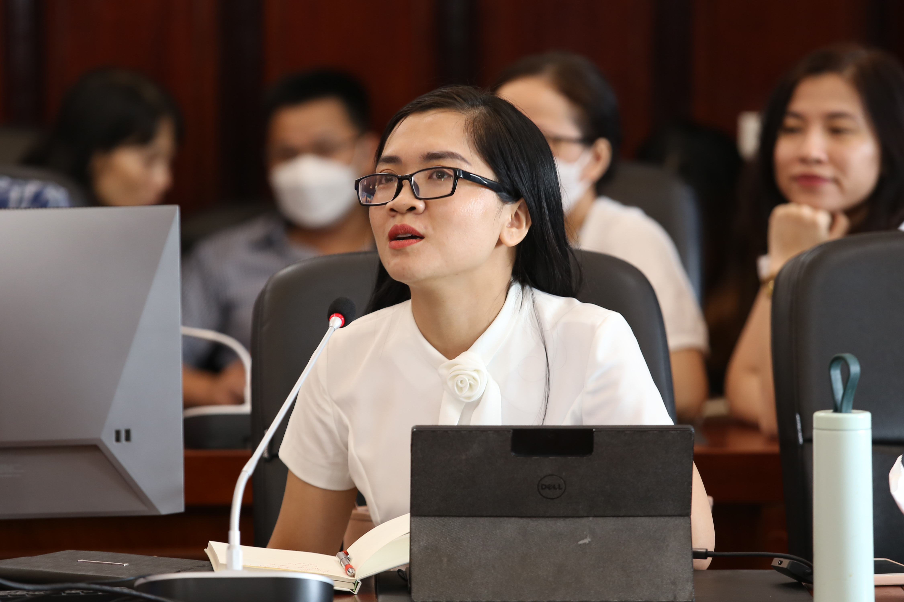

Hội nghị Tổng kết công tác Cố vấn học tập năm học 2021-2022 và triển khai công tác cố vấn học tập năm học 2022-2023
Ngày 20/09/2022
Thực hiện chương trình công tác năm 2022, sáng ngày 20/09/2022, tại Hội trường Tum, Học viện Ngân hàng (HVNH) tổ chức Hội nghị Tổng kết công tác Cố vấn học tập (CVHT) năm học 2021-2022 và triển khai công tác CVHT năm học 2022-2023 do PGS.TS. Nguyễn Thanh Phương - Phó Giám đốc Học viện chủ trì. Tham dự Hội nghị còn có đại diện Lãnh đạo các Khoa, phòng Đào tạo, phòng Quản lý người học, các giảng viên kiêm nhiệm CVHT và các cán bộ CVHT chuyên trách.

Toàn cảnh Hội nghị

PGS.TS. Nguyễn Thanh Phương - Phó Giám đốc Học viện phát biểu khai mạc Hội nghị
Phát biểu khai mạc Hội nghị, PGS.TS. Nguyễn Thanh Phương đã nhấn mạnh vai trò của công tác CVHT đồng thời ghi nhận và đánh giá cao những kết quả đạt được của đội ngũ CVHT trong năm học vừa qua. Mặc dù chịu ảnh hưởng của đại dịch Covid-19, tuy nhiên với sự nỗ lực phấn đấu của toàn thể đội ngũ CVHT cùng với sự phối hợp chặt chẽ giữa các Phòng chức năng và Khoa chuyên ngành, công tác CVHT năm học 2021-2022 đã được triển khai tương đối hiệu quả. PGS.TS. cũng bày tỏ mong muốn trên cơ sở những giải trình mà phòng QLNH trình bày, Hội nghị sẽ nghiêm túc thảo luận, nhìn nhận những hạn chế, từ đó ý kiến, đóng góp ý kiến cho công tác CVHT, góp phần nâng cao chất lượng đào tạo của Nhà trường trong thời gian tới.
ThS. Nguyễn Tuấn Hùng - Phó trưởng Phòng Quản lý người học báo cáo tổng kết công tác CVHT năm học 2021-2022 và phương hướng nhiệm vụ công tác CVHT năm học 2022-2023
Hội nghị đã được nghe báo cáo tổng kết công tác CVHT năm học 2021-2022 và phương hướng nhiệm vụ công tác CVHT năm học 2022-2023 từ ThS. Nguyễn Tuấn Hùng – Phó trưởng Phòng Quản lý người học. Thực hiện Quy chế 535 và Công văn hướng dẫn thực hiện công tác CVHT năm học 2021-2022, trong năm học vừa qua, công tác CVHT đã đạt được một số kết quả nổi bật như: Thực hiện tốt việc hướng dẫn, tư vấn và hỗ trợ thông tin cho sinh viên trong suốt quá trình học tập và rèn luyện; khuyến khích được SV tích cực học tập và tham gia NCKH; số lượng SV ra trường đúng hạn tăng so với những năm trước; các trường hợp SV thuộc diện CBHT đã có kết quả học tập, rèn luyện tiến bộ; nhiều em đã hoàn thành chương trình học và đủ điều kiện xét tốt nghiệp… Báo cáo cũng chỉ ra một số khó khăn, hạn chế trong công tác CVHT và phương hướng triển khai công tác CVHT trong năm học mới.
Các đại biểu thảo luận tại Hội nghị
Hội nghị cũng là dịp để CVHT cùng trao đổi, chia sẻ những vấn đề quan tâm chung đến Lãnh đạo nhà trường, từ đó đề xuất những giải pháp giải quyết kịp thời, hiệu quả. Tại Hội nghị, các cố vấn học tập đã tích cực trao đổi, góp ý các quy định, quy trình liên quan đến công tác cố vấn học tập như: Xây dựng kênh tông hợp trả lời thắc mắc sinh viên, các chính sách hỗ trợ sinh viên, hoàn thiện cơ chế khen thưởng, sổ tay quy chế học tập, góp ý cho dự thảo báo cáo tổng kết, tập huấn về khai thác thông tin cho cán bộ CVHT...
Kết luận Hội nghị, PGS.TS. Nguyễn Thanh Phương đã ghi nhận những ý kiến đóng góp từ các đại biểu đồng thời chỉ đạo phòng Quản lý người học cũng như các đơn vị liên quan tiếp thu nhằm hoàn thiện và phát triển hơn nữa các hoạt động CVHT trong thời gian tới.